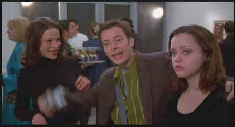

New Line/1998/86m/WS 1.85
 |
Taylor, Furlong and Ricci making the Waters scene©New Line |
This is really mild-mannered
Waters. Pecker is a young would-be photographer roaming Baltimore's streets taking
snapshots of everyone and everything. In between snaps he slings hash at a coffee shop and
hangs out with his girl friend at her Laundromat. Once in a while he visits his sister at
the gay strip club where she's a bartender and he often sneaks off for a peak in the
basement window at the action of a lesbian strip joint across the street from his father's
bar. His Mom runs a thrift shop with apparel cheap enough for a clientele of homeless
folks. His sister subsists on copious sugar binges. Pecker is such a nice kid he
even finds time to spend with his Grandma who has a room in the family abode. He room is a
shrine to a Virgin Mary doll that miraculously talks through Grandma's transparent
ventriloquy. Pecker's enthusiasm leads him to present a show of his photographs at
the coffee shop(The proprietor insists that anyone viewing the show must buy
something.)When a hip New York photography gallery owner happens on the show, she embraces
Pecker's work and the hype machine is revved up. It's no surprise that Pecker's
world changes on the fly. The results, however, are not as deliriously comic as you might
imagine.
Edward Furlong plays Pecker as the original innocent. His
performance is especially flat in contrast to the Waters terrain. Christina Ricci has some
strange moments as his girl and Lili Taylor is preciously smarmy as Rory the gallery
owner.
Listening to John Waters comment on Pecker is infinitely
more entertaining than watching Pecker in its movie only form. Commentary Gems from
Waters: "Wig snatching used to be a big problem in Baltimore."; "The extras
in Hollywood look like people who came in second for the Bay player roles."; "I
guess animals can’t jerk off. It’s a real problem in the animal kingdom.";
"I think Laundromats are sexy too. Everyone thinks about sex in a laundry because
they’re bored."; "You look at the most expensive from Japanese cutting edge
fashion and it does look like rags from the homeless people. It’s just a difference
in budget but it’s the same look." In addition to Waters' wisdom there's an on
camera interview with Chuck Shaccochis whose photography was used in Pecker.
Pecker defaulted to English subtitles, a minor pain. The
Waters look is outré plastic. Colors are intense, the soundtrack consistently upbeat.
This anamorphic transfer is sharp and delightful to look at. The neon glitz of seedy
Baltimore nightlife gets the high key treatment from Waters and the DVD production team.
Like the image, the upbeat Dolby Digital 5:1 soundtrack by Stewart Copeland is
outstanding.